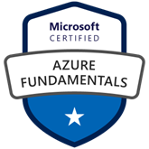

Azure Fundamentals
Microsoft
Foundational certification
Overview
This beginner-level credential tests broad familiarity with cloud computing and Azure. Its AZ-900 blueprint spans cloud models, service types, shared responsibility, and consumption-based pricing; Azure’s core architecture, compute, networking, storage, identity, and security; and the tools used for cost control, governance, deployment, and monitoring. The exam is organized into three weighted areas: cloud concepts, Azure architecture and services, and Azure management and governance. The guide reviewed here lists skills measured as of July 20, 2026.
You can also describe features and tools to secure, govern, and administer Azure.
Syllabus & skills
- Cloud models, shared responsibility, service types, and cost models
- Azure regions, resource hierarchy, compute, and networking
- Storage options, migration, identity, and access controls
- Security concepts, including Zero Trust and defense in depth
- Cost management, policy, compliance, and resource administration
- Monitoring, service health, and operational guidance tools
Issuer documentation
Study guide for Exam AZ-900: Microsoft Azure Fundamentals
Microsoft
See Source